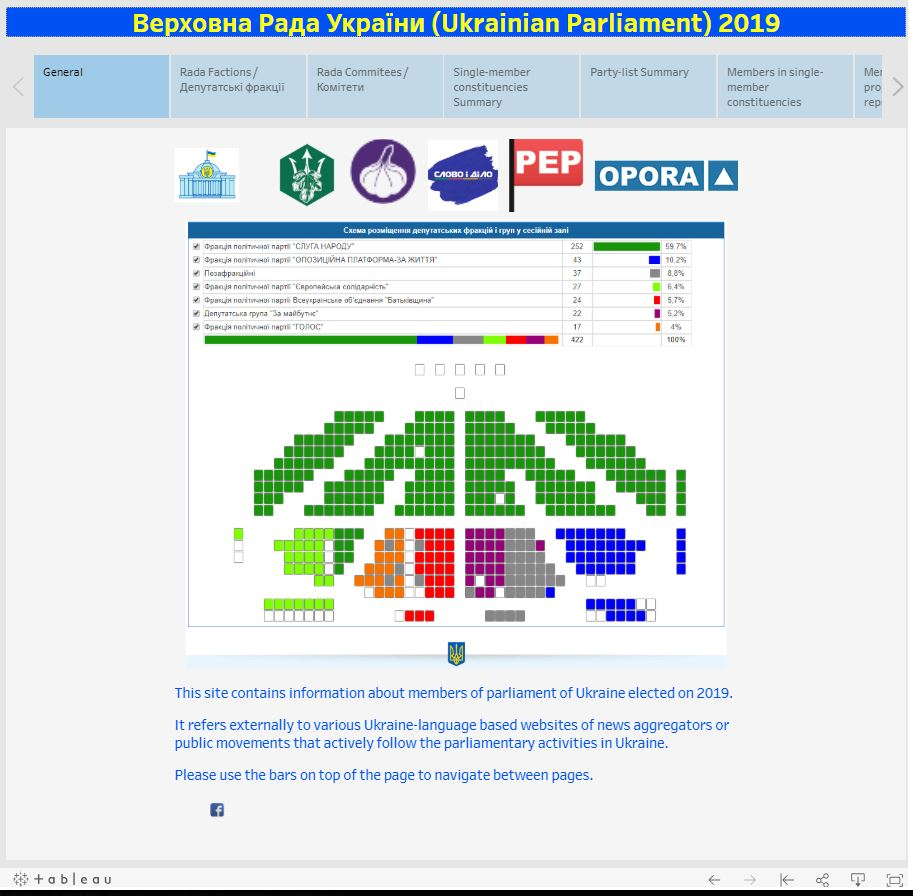
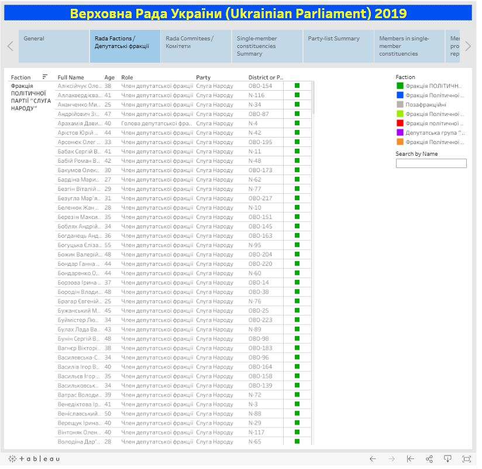
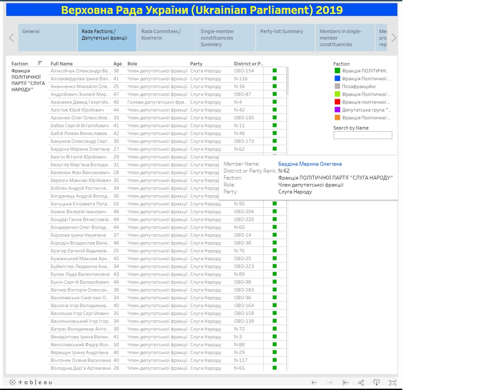
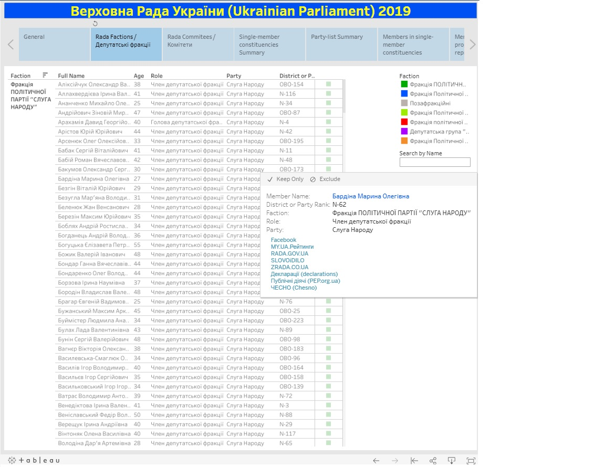

This site contains information about members of Parliament of Ukraine (Verkhovna Rada) elected in 2019 |
| It refers externally to various Ukraine-language based websites of news aggregators or public movements that actively follow the parliamentary activities in Ukraine. |
Navigation |
|
Please use the bars on top of the web page to navigate between pages:
The first page shows general information about the newly-elected parliament of Ukraine. Below navigational bars are the image-links to various Ukrainian sites that track activities of political figures:
The picture in the center represents the seating arrangements of MPs. If you click on the picture you'll be directed to the interactive picture on the Ukrainiam\n Parliament website that will show the name and photo of MPs at their place on the floor. |
|  |
The list of MPs per fraction or committee allows seeing detailed information about each MP. The last column indicated the affiliation of the MP to the fraction or committee. The right panel allows selecting a particular fraction or committee list. Search by Name input box can be used to find specific MP by his First name. |
|  |
| If you mouse hover over the last field you will get the info about particular MP. |
|  |
When you click on the last column (or any other column) you'll get a list of links to various websites that track political figures. The link will direct you to the specific page of selected MP on that website. |
|  |
Disclaimer. All information on this site is gathered from publicly available sources |
(c) Tableau4UA, no association with any political movement in Ukraine |